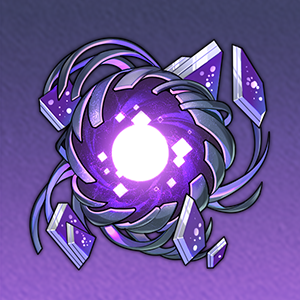

| 突破前 | 突破后 | 突破素材 | |
| 基础生命值 | 142 | - |
-
|
| 基础攻击力 | 102 | - | |
| 基础防御力 | 59 | - |
| 突破前 | 突破后 | 突破素材 | |
| 基础生命值 | 277 | 335 |

熄灭原核 5
信用点 4000 |
| 基础攻击力 | 200 | 241 | |
| 基础防御力 | 115 | 139 |
| 突破前 | 突破后 | 突破素材 | |
| 基础生命值 | 406 | 463 |
熄灭原核 10
信用点 8000 |
| 基础攻击力 | 293 | 334 | |
| 基础防御力 | 169 | 193 |
| 突破前 | 突破后 | 突破素材 | |
| 基础生命值 | 534 | 591 |
恒温晶壳 3
微光原核 6
信用点 16000 |
| 基础攻击力 | 386 | 427 | |
| 基础防御力 | 222 | 246 |
| 突破前 | 突破后 | 突破素材 | |
| 基础生命值 | 662 | 719 |
恒温晶壳 7
微光原核 9
信用点 40000 |
| 基础攻击力 | 478 | 519 | |
| 基础防御力 | 276 | 299 |
| 突破前 | 突破后 | 突破素材 | |
| 基础生命值 | 791 | 848 |
恒温晶壳 20

蠢动原核 6
信用点 80000 |
| 基础攻击力 | 571 | 612 | |
| 基础防御力 | 329 | 353 |
| 突破前 | 突破后 | 突破素材 | |
| 基础生命值 | 919 | 976 |
恒温晶壳 35蠢动原核 9
信用点 160000 |
| 基础攻击力 | 664 | 705 | |
| 基础防御力 | 383 | 406 |
| 突破前 | 突破后 | 突破素材 | |
| 基础生命值 | 1047 | - |
-
|
| 基础攻击力 | 756 | - | |
| 基础防御力 | 436 | - |